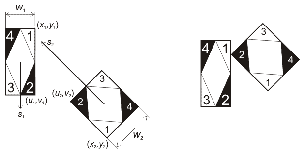

Home Page
F.A.Qs
Statistical Charts
Past Contests
Scheduled Contests
Award Contest
| Online Judge | Problem Set | Authors | Online Contests | User | ||||||
|---|---|---|---|---|---|---|---|---|---|---|
| Web Board Home Page F.A.Qs Statistical Charts | Current Contest Past Contests Scheduled Contests Award Contest | |||||||||
|
Language: Road Accident
Description Two cars crashed on the road, receiving some damage each, and raising the usual question: "Who to blame?". To answer this, it is essential to thoroughly reconstruct the sequence of events. By gathering witness testimonies and analyzing tire tracks, positions and speeds of cars just before the impact were determined. From these positions until the crash the cars moved straight forward. Your program must, given the available data, calculate for each car what part of it first came into contact with the other car. Parts are numbered as shown on the picture. Input Input file contains twelve floating point numbers: x1 y1 u1 v1 w1 s1 x2 y2 u2 v2 w2 s2, where (x, y) and (u, v) — coordinates of back-left and forward-left corners of the car, w — width of the car, s — speed of the car. Constraints 1 ≤ xi, yi, ui, vi, wi ≤ 106, 0 ≤ si ≤ 106. Input data is such that a crash certainly happens. Initially cars don't have common points. Output Output file must contain two integers: p1 p2, where p — number of part which first contacted the other one (if two parts came into contact simultaneously, output the lesser of the part numbers), Sample Input Sample input 1 1.0 2.0 10.0 2.0 1.0 10.0 50.0 1.0 40.0 1.0 1.0 20.0 Sample input 2 1 1 10 1 1 20 40 1 50 1 1 10 Sample Output Sample output 1 2 2 Sample output 2 2 1 Hint Bold texts appearing in the sample sections are informative and do not form part of the actual data. Source Northeastern Europe 2005, Far-Eastern Subregion |
[Submit] [Go Back] [Status] [Discuss]
All Rights Reserved 2003-2013 Ying Fuchen,Xu Pengcheng,Xie Di
Any problem, Please Contact Administrator